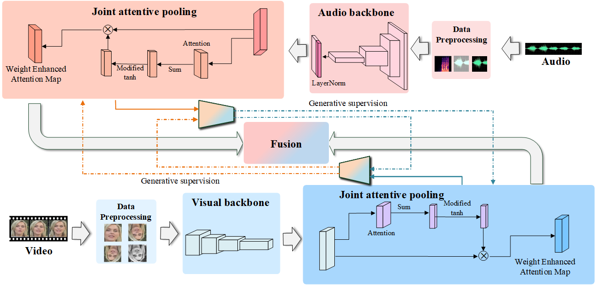

|
I am a Researcher at BUPT, focused on machine learning for emotion/sentiment understanding and multimodal understanding. After I graduated from BUPT, I was recommended to the College of artificial intelligence in BUPT for a master's degree. Heading to my PhD in future. I have been an intern at Megvii and Tencent to do researches and projects of emotion/sentiment understanding and multimodal understanding.
|
{kind=link}
|
My research focuses on person recognition, emtion/sentiment recognition and multi-modal machine learning techniques for video recognition, including the use of sound and text to learn better visual representations. |

|
PeiwenSun, Wenjing Ye, Wenqing Yu Mathematical Contest In Modeling, 2021 Finalist Award github A modeling scheme for the layout and number of drones to extinguish and monitor wildfires in southern Australia. |
|  |
PeiwenSun, Shanshan Zhang, Zishan Liu, Yougen Yuan, Taotao Zhang, Honggang Zhang, Pengfei Hu Arxiv, 2022 Submitted to ICASSP arxiv A Network for multimodel person verification. |